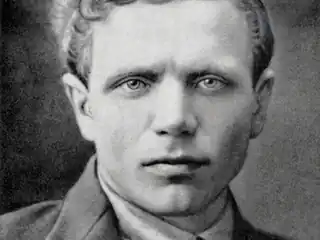
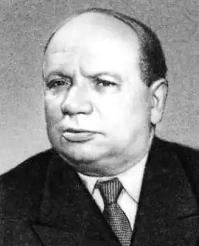

Олександр Андрійович Прокоф'єв (19 листопада (2 грудня) 1900, д. Кобона, Волховський район Ленінградської області — 18 вересня 1971, Ленінград) — російський радянський поет, Герой Соціалістичної Праці (1970).
Прокоф'єв Олександр Андрійович народився в 1900 році в сім'ї селянина — рибалки і землероба. Закінчив сільську школу і з 1913 по 1917 роки навчався в Петербурзькій учительській семінарії. У 1919 році став членом РКП (б) і вступив в Червону Армію й перебував у ній до 1930 року. Друкуватися почав з 1927 року.
Олександр Прокоф'єв наполегливо шукав шляхи ліричного відтворення характеру російської людини нової епохи. Цьому сприяло з'єднання в його власному життєвому досвіді традиційно-селянського та пролетарсько-революційного начал. Сила вже ранніх віршів Прокоф'єва полягала в тому, що вони завжди створювалися на конкретному матеріалі життя, на основі трепетно живого сприйняття світу. "Я вважаю, — заявляв він, — що будь-якому авторові необхідно знайти свого героя. Особисто я знайшов його в особі трудового селянського хлопця і провів його майже по всіх сторінках книг". Але цей прокоф'євский "селянський хлопець", його життя і світогляд несли на собі печатку нової епохи. Він виступав як перетворювач світу не тільки в селі, а й у місті. У 1931 р. Олександр Прокоф'єв видав свої перші книги віршів "Полудень" і "Вулиця Червоних зорь", в яких основне місце зайняли жителі ладозького села і герої громадянської війни. Він увійшов у радянську літературу як поет нової, революційної Росії, як поет Жовтневої революції, її ідей і героїв. У 30-х Прокоф'єв випускає збірки ліричних віршів і пісень: "Перемога" (1932), "Дорога через міст" (1933), "Літопис" (1934), "Прямі вірші" (1936), "На захист закоханих" (1939 ). Творчість Прокоф'єва завоювала загальне визнання. Поряд з творчістю О. Твардовського, Я. Смелякова, Б. Руч'єва і інших письменників поезія Олександра Прокоф'єва поглиблювала зв'язки мистецтва з життям, поета з мільйонними масами трудівників і істолініі, розвитку радянської поезії. Щоправда, у перших книгах часом позначалося надмірне захоплення Прокоф'єва діалектизмами і деякими фольклорними прийомами. Під час радянсько-фінляндської війни (1939-1940) і Великої Вітчизняної війни (1941-1945) Олександр Прокоф'єв — військовий журналіст, член письменницької групи при політуправлінні Ленінградського фронту. Прокоф'єв активно працює в армійському друку, виступає перед бійцями Ленінградського, Волховського і Північного фронтів. Пише агітвірші, віршовані фейлетони, пісні, частівки. Помітним явищем радянської поезії воєнних років стала поема "Росія" (1944; Сталінська премія, 1946) — розповідь про братів Шумових, які добровільно приїхали з Сибіру на захист Ленінграда і склали розрахунок важкого міномета. У 1945-1948 і 1955-1965 р.р. Олександр Прокоф'єв був відповідальним секретарем Ленінградського відділення СП РРФСР. У перші повоєнні роки Прокоф'єв опублікував цикл віршів про світ, про радість оживаючої землі ("Нині вдалися квіти всюди...", "Ти по серцю мені, російська природа", "Пополам з тобою, дорога..." та ін.) Новий етап у творчості Прокоф'єва починається з книги "Заріччя" (1955); в 1960 вийшов збірник "Запрошення до подорожі", що відзначається широтою задуму та змісту, ясністю і глибиною форми. Враження від численних поїздок по країні та за кордон знайшли відображенням в книгах "Яблуня над морем" (1958), "Вірші з дороги" (1963), "Під сонцем і під зливами" (1964) та ін. Відмінні риси поезії Прокоф'єва — близькість до народного слова, фольклору, яскрава образність і емоційність, схильність до жарту, іронії, вірність "пересічному" героєві. Багатоколірна, дзвінка і гримляча поезія Прокоф'єва з роками стає більш стриманою. Від "веселої недорікуватості" перших віршів ("Тирлі-бутирлі, дуй тебе горою") поет прийшов до більш суворої і лаконічної манери письма. На вірші Прокоф'єва були написані пісні, серед яких найбільш відомі — "Товариш" (музика О. Іванова, перша його пісня), що стала неофіційним гімном молоді, і "Тайга золота" (музика В. Пушкова) з однойменного кінофільму. Помер Олександр Прокоф'єв в 1971 році, похований на Богословському кладовищі в Ленінграді.